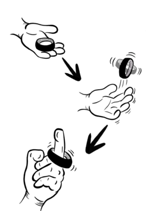

Présentation
La Barniote est un jeu d’adresse utilisant un rouleau de barnier (ou scotch d’électricien), utilisé notamment dans le milieu du spectacle vivant. Elle a été inventée en 2025, à l’Opéra de Reims par 4 techniciens : Sancho, Momo, Nico et Polo.
Les lignes qui vont suivre expliquent en détail les règles de ce dernier.
But du jeu
La BARNIOTE est un jeu de gentlemen où deux joueur·euses (le·la barnioteur·euse et le·la barnioté·e) s’affrontent chacun leur tour dans un jeu d’adresse consistant à envoyer en l’air, dans une rotation impeccable, un barnier et à le réceptionner sur son majeur.
Chaque partie se termine en 7 points gagnants et se compose d’autant de rounds que nécessaire pouvant s’étaler sur toute une journée de travail, sans entraver les activités annexes.
Règles du jeu
Avant-propos technique : le lancer
Pour qu’une Barniote soit valide, il est important de respecter certaines règles :

- Lors du lancer, le barnier doit effectuer au minimum un tour sur lui-même à une hauteur respectable (plus haut que les yeux du lanceur), ou plusieurs tours (au moins deux) à une hauteur moindre avant d’être réceptionné sur le majeur.
Si cette règle n’est pas respectée, le·la barnioté·e (le·la défenseur·se) peut protester par un « Mimou… » qui sera d’abord pris comme un avertissement. Mais s’il·elle récidive au cours de la partie, le·la barnioté peut annoncer un « Barnier Mou ! », qui annulera le tour de son adversaire et lui permettra de récupérer la main.
- Chaque lanceur·se est tenu de garder une main dans le dos lors du lancer, sous peine d’annulation de son tour par son adversaire en protestant un « Barniot Manchot » qui récupère la main.
- Le diamètre intérieur du barnier doit être au maximum de 31 mm pour être homologué par la FFBIT.
- Son taux de remplissage est à la préférence du·de la joueur·se, qui peut également le personnaliser à son goût.
Déroulement de partie
1Le salut
Il est toujours de bon ton de défier son adversaire par une phrase amicale telle que « Une ’tite Barniote ? » et de ne pas oublier de saluer ce dernier au début de chaque partie par un check des barniers. Le·la joueur·se qui provoque la rencontre choisit le terrain de jeu et laisse la main à son adversaire qui se verra jouer en premier. En fin de jeu, il est également de bon ton de re-saluer son adversaire par un ultime check de barniers, le jeu étant avant tout, un jeu de gentlemen.
2L’échange
Le·la barnioteur·se est le·la joueur·se qui engage le round. Il·elle va donc tenter de rentrer une Barniote pendant que son adversaire patiente en lui faisant face.
Un échange se déroule de la manière suivante :
Le·la joueur·se qui a la main lance, s’il·elle échoue à barnioter, la main passe à son adversaire et ainsi de suite jusqu’à ce qu’une Barniote soit rentrée.
- Garder son point : il se soumet alors à la tentative de Contre de son adversaire.
- Tenter de doubler son point en effectuant une Re-Barniote (cf. règles) puis se soumettre au contre en cas de réussite. Sur un échec, la main passe à son adversaire.
Une fois le Contre effectué, si au moins un point a été marqué, le·la joueur·se ayant le moins de points prend la main et un nouvel échange commence (il est donc possible de rejouer juste après avoir effectué une Barniote si on a toujours le score le moins élevé).
En cas d’égalisation, le·la dernier·e joueur·se à avoir perdu le point reprend la main.
3La victoire
Un match se termine lorsque :
- un·e joueur·se atteint 7 points (après contre) ;
- une Fin de Show survient ;
- la fin du monde survient.
Règles de base
1Le contre
L’adversaire se voit offrir la possibilité d’annuler le point en cours en rentrant lui aussi une Barniote sous les mêmes conditions que son adversaire (barniote simple ; À l’ancienne ; Re-Barniote, etc.).
2La Big Barniote
Si un·e joueur·se rentre une Barniote sur son premier lancer de la partie (hors Contre et Barniote ça filotte) il marque 2 points.
Cette Big Barniote peut être contrée normalement par une barniote de son adversaire.
- Le premier joueur rentre une Big Barniote à son premier lancer, son adversaire tente un contre et le rate. Il marque 2 pts.
- Vient ensuite le premier tour de son adversaire, qui rentre également une Big Barniote (le Contre ne compte pas comme son premier lancer).
- Le joueur tente alors le Contre et le réussit, annulant les 2 pts de son adversaire.
- Score de l’échange : 2-0.
Il est possible de rajouter la condition À l’ancienne (cf. règles avancées) à la Big Barniote, celle-ci valant 4 points. De quoi faire trembler votre adversaire dès le premier lancer !
3La Re-Barniote
Suite à une Barniote réussie (même sur une Big Barniote, une Barniote de match ou une Barniole) le·la joueur·se peut décider d’annoncer une Re-Barniote et relancer son barnier.
Une Re-Barniote double les points de la barniote précédente. Cependant elle annule la série en cas d’échec ! Quitte ou double !
4L’ultime rempart
Lors d’une Barniote de Match (7e point marqué par un·e joueur·se avant contre), le défenseur peut Barnioler sur son Contre : c’est l’Ultime Rempart.
Une Barniole permet de relancer son barnier quand ce dernier est rattrapé par la même main de lancer sans toucher ni le sol, ni le reste du corps du·de la joueur·se. Une fois rattrapée le·la joueur·se annonce sa Barniole, un nombre suivant une incrémentation de trois. Le·la premier·e joueur·se à annoncer une Barniole au cours de la partie commence son annonce à 1 (puis 4 ; 7 ; 10…) son adversaire commencera donc la sienne à 2 (puis 5 ; 8 ; 11…). À chaque Barniole réussie le·la joueur·se devra ajouter 3 à sa précédente Barniole. S’il se trompe dans le nombre énoncé, son adversaire peut rétorquer un « Rikikit ! », interrompant ainsi la tentative de contre et validant son 7e point.
Cette règle n’est applicable qu’une seule fois par joueur·euse. Sur la Barniote de Match suivante, le·la défenseur doit contrer en un seul essai comme habituellement.
5Overkill
Il est possible lors de sa Barniote de Match de Rebarnioter ou de Barnioter À l’ancienne afin de dépasser les 7 points nécessaires à la victoire.
C’est l’Overkill. Dans ce cas le score monte à 8 ou plus et le défenseur doit contrer l’intégralité des points marqués pour ne pas perdre le match.
6Fin de Show !
Si un·e joueur·se perd son barnier en cours de partie et n’est pas en capacité de le récupérer promptement et en toute sécurité, la règle Fin de Show s’applique, mettant fin à la partie et déclarant son adversaire vainqueur avec ses points actuels.
Règles avancées
1Barniote ça filotte !
Si le barnier tombe au sol et se met à rouler, le barnioté (défenseur) se doit de dire avec une diction impeccable : « Barniote qui filotte ! » OU « Barniote ça filotte ! » (les deux sont acceptés). Le·la joueur·se ayant perdu son barnier doit partir à sa poursuite pendant que l’autre peut tenter de rentrer une Barniote avant qu’il ne le récupère. Il dispose d’autant de lancers qu’il peut en réaliser dans ce laps de temps. S’il réussit à placer une Barniote, il doit annoncer « C’est moi qui Barniote ! » et marque un point. Si le·la joueur·se en cavale récupère son barnier il annonce « Pas touche la barniote ! » ou « Pas touche ma barniote ! » en brandissant son barnier. Le premier des deux à placer sa phrase met fin à la Filotte. Le match peut reprendre là où il en était sans modifier le changement de main prévu avant la Filotte.
Si une Filotte est déclarée trop tôt ou que le barnier n’a pas roulé du tout, le joueur recevra un avertissement. Au deuxième donné au cours de la partie, celui-ci n’aura plus le droit de filotter.
2Pet coincé
Si le barnier du lanceur reste coincé sur le doigt sans descendre complètement, le·la joueur·se doit déclarer rapidement « Pet coincé ! » avant son adversaire pour valider son point.
Si l’adversaire est plus rapide que lui, le point est annulé et il récupère la main.
3À l’ancienne
Sur un timing parfait il est possible de synchroniser une barniote avec un vent. Elle est donc dite « À l’ancienne » et vaut un point supplémentaire.
En cas de contre l’adversaire peut lui aussi tenter une Barniote À l’ancienne pour annuler les deux points ou simplement réussir deux Barniotes de contre à la suite pour nullifier le score. Pour affirmer sa prestance et asseoir sa maîtrise il peut proclamer une phrase de son cru, exemple : « Il y a du vent dans les guindes ! », « Le grill nous tombe sur la tête ! », « Ça buzz en façade ! », ou encore « La gazeuse est à burne, on est sûr que les têtes sont bien coupées ?! ».
4La Figure
Il est possible de réceptionner son barnier de manière artistique en effectuant une figure. Celle-ci augmente considérablement la difficulté mais accroît de manière cosmique l’aura de celui qui réussit. Elle ne vaut aucun point supplémentaire, n’impose pas une figure sur le contre. En revanche, elle possède un effet dévastateur sur le moral de l’adversaire.
Toutefois, un barnioteur digne de ce nom aura tendance à répondre à une figure par une figure pour garder son honneur intact et éviter les quolibets de ses pairs. (Barnioteur amateur !!!)
Matchs amicaux (non officiels)
Il est possible de disputer un match en choisissant de bannir ou d’ajouter certaines règles afin de pimenter, accélérer, simplifier ou complexifier la partie.
Exemple : « Re-Barniote » obligatoire à chaque tour ou encore pas de « contres » pour une partie plus rapide.
Ces matchs ne sont pas comptabilisés par la FFBIT et ne comptent pas comme des victoires quotidiennes et ne peuvent pas remplacer une partie classée. Ils représentent néanmoins un bon moyen de s’entraîner.
Code d’honneur du Barnioteur
- Le barnioteur doit savoir se montrer honorable.
- Toujours il respecte les règles.
- Jamais il ne pose pied sur un barnier à terre.
- Jamais il n’interfère avec la voltige d’un barnier adverse ou avec la cavale d’une filotte.
- Jamais il ne modifie ou dérobe le barnier personnel d’un autre.
Si un·e joueur·se, de quelque façon que ce soit, manque à son éthique de gentleman barnioteur, le·la joueur·se offensé peut clamer « Traître à la Barniote ! », « Barnioteur de bas étage ! » ou quelque injure de son choix pour afficher son mécontentement quant au respect de l’éthique de la Barniote. En effet, il ne faut pas oublier que la Barniote est un jeu de gentleman et que la réputation dudit joueur en question risque d’en pâtir, surtout si la partie se déroule en public.
Les parties de Barniote les plus underground, réalisées sans publics, dans l’illégalité la plus complète, sont réputées comme le terrain des actes le plus vils et les plus traîtres où les barnioteurs oublient bien souvent leurs conditions de gentleman. Elles sont bien sûr illégales et officiellement rejetées par la FFBIT mais sont officieusement un « Haut Fait » âprement recherché par nombre de Barnioteurs en quête de renommée.